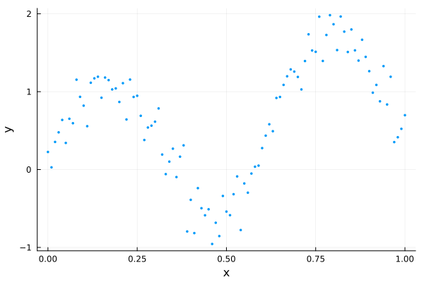

Initializing HMC with Pathfinder
The MCMC warm-up phase
When using MCMC to draw samples from some target distribution, there is often a lengthy warm-up phase with 2 phases:
- converge to the typical set (the region of the target distribution where the bulk of the probability mass is located)
- adapt any tunable parameters of the MCMC sampler (optional)
While (1) often happens fairly quickly, (2) usually requires a lengthy exploration of the typical set to iteratively adapt parameters suitable for further exploration. An example is the widely used windowed adaptation scheme of Hamiltonian Monte Carlo (HMC) in Stan [3], where a step size and positive definite metric (aka mass matrix) are adapted. For posteriors with complex geometry, the adaptation phase can require many evaluations of the gradient of the log density function of the target distribution.
Pathfinder can be used to initialize MCMC, and in particular HMC, in 3 ways:
- Initialize MCMC from one of Pathfinder's draws (replace phase 1 of the warm-up).
- Initialize an HMC metric adaptation from the inverse of the covariance of the multivariate normal approximation (replace the first window of phase 2 of the warm-up).
- Use the inverse of the covariance as the metric without further adaptation (replace phase 2 of the warm-up).
This tutorial demonstrates all three approaches with DynamicHMC.jl and AdvancedHMC.jl. Both of these packages have standalone implementations of adaptive HMC (aka NUTS) and can be used independently of any probabilistic programming language (PPL). Both the Turing and Soss PPLs have some DynamicHMC integration, while Turing also integrates with AdvancedHMC.
For demonstration purposes, we'll use the following dummy data:
using LinearAlgebra, Pathfinder, Random, StatsFuns, StatsPlots
Random.seed!(91)
x = 0:0.01:1
y = @. sin(10x) + randn() * 0.2 + x
scatter(x, y; xlabel="x", ylabel="y", legend=false, msw=0, ms=2)
We'll fit this using a simple polynomial regression model:
\[\begin{aligned} \sigma &\sim \text{Half-Normal}(\mu=0, \sigma=1)\\ \alpha, \beta_j &\sim \mathrm{Normal}(\mu=0, \sigma=1)\\ \hat{y}_i &= \alpha + \sum_{j=1}^J x_i^j \beta_j\\ y_i &\sim \mathrm{Normal}(\mu=\hat{y}_i, \sigma=\sigma) \end{aligned}\]
We just need to implement the log-density function of the resulting posterior.
struct RegressionProblem{X,Z,Y}
x::X
J::Int
z::Z
y::Y
end
function RegressionProblem(x, J, y)
z = x .* (1:J)'
return RegressionProblem(x, J, z, y)
end
function (prob::RegressionProblem)(θ)
(; σ, α, β) = θ
(; z, y) = prob
lp = normlogpdf(σ) + logtwo
lp += normlogpdf(α)
lp += sum(normlogpdf, β)
y_hat = muladd(z, β, α)
lp += sum(eachindex(y_hat, y)) do i
return normlogpdf(y_hat[i], σ, y[i])
end
return lp
end
J = 3
dim = J + 2
model = RegressionProblem(x, J, y)
ndraws = 1_000;DynamicHMC.jl
To use DynamicHMC, we first need to transform our model to an unconstrained space using TransformVariables.jl and wrap it in a type that implements the LogDensityProblems interface (see DynamicHMC's worked example):
using DynamicHMC, ForwardDiff, LogDensityProblems, LogDensityProblemsAD, TransformVariables
using TransformedLogDensities: TransformedLogDensity
transform = as((σ=asℝ₊, α=asℝ, β=as(Array, J)))
P = TransformedLogDensity(transform, model)
∇P = ADgradient(:ForwardDiff, P)ForwardDiff AD wrapper for TransformedLogDensity of dimension 5, w/ chunk size 5Pathfinder can take any object that implements this interface.
result_pf = pathfinder(∇P)Single-path Pathfinder result
tries: 1
draws: 5
fit iteration: 19 (total: 21)
fit ELBO: -116.69 ± 1.02
fit distribution: MvNormal{Float64, Pathfinder.WoodburyPDMat{Float64, LinearAlgebra.Diagonal{Float64, Vector{Float64}}, Matrix{Float64}, Matrix{Float64}, Pathfinder.WoodburyPDFactorization{Float64, LinearAlgebra.Diagonal{Float64, Vector{Float64}}, LinearAlgebra.QRCompactWYQ{Float64, Matrix{Float64}, Matrix{Float64}}, LinearAlgebra.UpperTriangular{Float64, Matrix{Float64}}}}, Vector{Float64}}(
dim: 5
μ: [-0.3519374280435783, 0.24690060085808352, 0.05827588420411166, 0.11655175215761515, 0.17482765383322801]
Σ: [0.030470535582573646 -0.03661823339128469 … 0.4328459564245804 -0.2549084704414328; -0.036618233391284685 0.07360308852991218 … -0.6186868401733454 0.35424346691660885; … ; 0.4328459564245804 -0.6186868401733454 … 8.072397876287294 -4.763497833494317; -0.25490847044143283 0.3542434669166089 … -4.763497833494316 2.8228749971688516]
)
init_params = result_pf.draws[:, 1]5-element Vector{Float64}:
-0.18636015570416345
0.24190925179794034
0.08881799120872771
0.4864478031506838
-0.01588320716117486inv_metric = result_pf.fit_distribution.Σ5×5 Pathfinder.WoodburyPDMat{Float64, LinearAlgebra.Diagonal{Float64, Vector{Float64}}, Matrix{Float64}, Matrix{Float64}, Pathfinder.WoodburyPDFactorization{Float64, LinearAlgebra.Diagonal{Float64, Vector{Float64}}, LinearAlgebra.QRCompactWYQ{Float64, Matrix{Float64}, Matrix{Float64}}, LinearAlgebra.UpperTriangular{Float64, Matrix{Float64}}}}:
0.0304705 -0.0366182 -0.0704775 0.432846 -0.254908
-0.0366182 0.0736031 0.0994129 -0.618687 0.354243
-0.0704775 0.0994129 0.274101 -1.33864 0.774172
0.432846 -0.618687 -1.33864 8.0724 -4.7635
-0.254908 0.354243 0.774172 -4.7635 2.82287Initializing from Pathfinder's draws
Here we just need to pass one of the draws as the initial point q:
result_dhmc1 = mcmc_with_warmup(
Random.default_rng(),
∇P,
ndraws;
initialization=(; q=init_params),
reporter=NoProgressReport(),
)(posterior_matrix = [-0.44029878658792876 -0.3465819096424023 … -0.3084633509471166 -0.34333299930361416; 0.08855552660795894 0.43852187053151576 … 0.29200308559278515 0.13749162663316086; … ; 0.5374419387335928 -1.7006576549130301 … 0.17332855132453992 1.1988891156079522; -0.10415405682529122 1.1133817946732238 … -0.12172266133174808 0.19986563972472965], tree_statistics = DynamicHMC.TreeStatisticsNUTS[DynamicHMC.TreeStatisticsNUTS(-116.11085607924853, 6, turning at positions -42:21, 0.9819299002938043, 63, DynamicHMC.Directions(0xd316b355)), DynamicHMC.TreeStatisticsNUTS(-118.27215053935927, 7, turning at positions -34:93, 0.9966782987414097, 127, DynamicHMC.Directions(0xb409c85d)), DynamicHMC.TreeStatisticsNUTS(-118.74254313722845, 6, turning at positions 49:112, 0.9991611503869388, 127, DynamicHMC.Directions(0x602ff170)), DynamicHMC.TreeStatisticsNUTS(-116.53129548397122, 5, turning at positions -16:15, 0.9932333985715305, 31, DynamicHMC.Directions(0x9be8fa4f)), DynamicHMC.TreeStatisticsNUTS(-117.30783056877972, 5, turning at positions -1:30, 0.9427765917779274, 31, DynamicHMC.Directions(0xaaf73b3e)), DynamicHMC.TreeStatisticsNUTS(-116.91786815252303, 5, turning at positions -17:14, 0.9867812870896767, 31, DynamicHMC.Directions(0x12b762ee)), DynamicHMC.TreeStatisticsNUTS(-116.5080797037383, 5, turning at positions -21:10, 1.0, 31, DynamicHMC.Directions(0x9f74472a)), DynamicHMC.TreeStatisticsNUTS(-122.74441156811854, 2, turning at positions -2:1, 0.18496308829501298, 3, DynamicHMC.Directions(0x5dc1a151)), DynamicHMC.TreeStatisticsNUTS(-122.25660910713272, 6, turning at positions -58:5, 0.9999999999999999, 63, DynamicHMC.Directions(0x144cca85)), DynamicHMC.TreeStatisticsNUTS(-122.90547650508891, 6, turning at positions -26:37, 0.9970688549212551, 63, DynamicHMC.Directions(0xcdde1a65)) … DynamicHMC.TreeStatisticsNUTS(-116.33371508361525, 6, turning at positions -44:-107, 0.9584866888936572, 127, DynamicHMC.Directions(0x5ae4b614)), DynamicHMC.TreeStatisticsNUTS(-114.41628362903134, 6, turning at positions -58:-121, 0.9942176458694822, 127, DynamicHMC.Directions(0x091d0406)), DynamicHMC.TreeStatisticsNUTS(-116.62141769290196, 6, turning at positions -59:-62, 0.8203156764880717, 75, DynamicHMC.Directions(0xefdfb68d)), DynamicHMC.TreeStatisticsNUTS(-116.24272442283912, 4, turning at positions 16:19, 0.8408980879136415, 31, DynamicHMC.Directions(0x5f0650d3)), DynamicHMC.TreeStatisticsNUTS(-119.39582472004665, 4, turning at positions -22:-25, 0.8785420643314963, 27, DynamicHMC.Directions(0x89c5ef22)), DynamicHMC.TreeStatisticsNUTS(-115.24532562688194, 2, turning at positions -1:2, 0.9999999999999999, 3, DynamicHMC.Directions(0x782f903e)), DynamicHMC.TreeStatisticsNUTS(-115.58095398018432, 5, turning at positions -41:-44, 0.8909205103955224, 47, DynamicHMC.Directions(0xf3f89383)), DynamicHMC.TreeStatisticsNUTS(-115.123045155536, 5, turning at positions 47:50, 0.9552721574193926, 51, DynamicHMC.Directions(0x5158f43e)), DynamicHMC.TreeStatisticsNUTS(-115.79208573920732, 5, turning at positions 36:39, 0.8706824742726574, 51, DynamicHMC.Directions(0x19b78933)), DynamicHMC.TreeStatisticsNUTS(-119.73283918149379, 5, turning at positions -21:-36, 0.9863637943693525, 63, DynamicHMC.Directions(0x0eff55db))], logdensities = [-114.92203844731422, -115.8957690312109, -116.12372372059049, -115.19853189755288, -116.0940239368059, -116.53564913202351, -115.34745143062962, -120.68781705744126, -119.12987490602092, -116.1176777586462 … -113.6821239292742, -113.95105888981938, -113.70726466632475, -115.56330545660242, -115.57998585763356, -113.75291421546062, -113.09962017149253, -113.42047150319647, -113.08558173261994, -115.49513224522981], κ = Gaussian kinetic energy (Diagonal), √diag(M⁻¹): [0.06739723074399435, 0.13993110003748874, 0.9739855394712311, 0.9168010887973217, 0.6593250660471424], ϵ = 0.04500856984564306)Initializing metric adaptation from Pathfinder's estimate
To start with Pathfinder's inverse metric estimate, we just need to initialize a DynamicHMC.GaussianKineticEnergy object with it as input:
result_dhmc2 = mcmc_with_warmup(
Random.default_rng(),
∇P,
ndraws;
initialization=(; q=init_params, κ=GaussianKineticEnergy(inv_metric)),
warmup_stages=default_warmup_stages(; M=Symmetric),
reporter=NoProgressReport(),
)(posterior_matrix = [-0.37360890698256194 -0.3120039612548601 … -0.33637943360069444 -0.29997828556613315; 0.11337021800603739 0.12023891552878153 … 0.3970679557012297 0.12480102662048842; … ; 0.9658272590356176 0.09818890475854913 … 1.8792558745692303 2.1024546827316675; -0.4618067147781709 0.05143523610533807 … -0.41656279293384496 -0.6745243270292157], tree_statistics = DynamicHMC.TreeStatisticsNUTS[DynamicHMC.TreeStatisticsNUTS(-117.31148389250428, 4, turning at positions -2:13, 0.843071523247334, 15, DynamicHMC.Directions(0x5436265d)), DynamicHMC.TreeStatisticsNUTS(-120.49526855783583, 3, turning at positions -4:3, 0.9375607376756996, 7, DynamicHMC.Directions(0x4af466eb)), DynamicHMC.TreeStatisticsNUTS(-114.37797014209946, 3, turning at positions -2:5, 0.8590270305023798, 7, DynamicHMC.Directions(0xcc20db8d)), DynamicHMC.TreeStatisticsNUTS(-114.87100257688542, 2, turning at positions 0:3, 0.9277103397858055, 3, DynamicHMC.Directions(0x5a19d6e3)), DynamicHMC.TreeStatisticsNUTS(-114.13450495124724, 4, turning at positions -7:8, 0.9918873904940901, 15, DynamicHMC.Directions(0xe4676318)), DynamicHMC.TreeStatisticsNUTS(-113.97159218268348, 3, turning at positions -3:4, 0.9829629325200587, 7, DynamicHMC.Directions(0xe5cbef4c)), DynamicHMC.TreeStatisticsNUTS(-116.7103396368561, 4, turning at positions -11:4, 0.9037094180765984, 15, DynamicHMC.Directions(0x64bbeb44)), DynamicHMC.TreeStatisticsNUTS(-113.75832302029752, 3, turning at positions -6:1, 0.9934673454259538, 7, DynamicHMC.Directions(0xe8d09b89)), DynamicHMC.TreeStatisticsNUTS(-115.95831394305543, 3, turning at positions -2:5, 0.7989654703550629, 7, DynamicHMC.Directions(0xabcb2f05)), DynamicHMC.TreeStatisticsNUTS(-123.7322737114248, 3, turning at positions -3:4, 0.4735109147511188, 7, DynamicHMC.Directions(0x052372f4)) … DynamicHMC.TreeStatisticsNUTS(-116.52908563909713, 3, turning at positions 0:7, 0.9035147764947282, 7, DynamicHMC.Directions(0x08b9b727)), DynamicHMC.TreeStatisticsNUTS(-118.57212574665964, 3, turning at positions -1:6, 0.9860256252392418, 7, DynamicHMC.Directions(0x6cba2d46)), DynamicHMC.TreeStatisticsNUTS(-119.61039611477536, 3, turning at positions -7:0, 0.993235238579963, 7, DynamicHMC.Directions(0x37620270)), DynamicHMC.TreeStatisticsNUTS(-115.6207721478903, 3, turning at positions -3:4, 0.9999999999999999, 7, DynamicHMC.Directions(0x6ac7e84c)), DynamicHMC.TreeStatisticsNUTS(-116.78727545985531, 3, turning at positions -5:2, 0.9940797416215332, 7, DynamicHMC.Directions(0x9202b022)), DynamicHMC.TreeStatisticsNUTS(-116.81653706703638, 3, turning at positions -2:5, 0.9999999999999999, 7, DynamicHMC.Directions(0x8ec79a85)), DynamicHMC.TreeStatisticsNUTS(-115.46180599487488, 3, turning at positions -6:1, 0.9946311968736652, 7, DynamicHMC.Directions(0xfffdf5e1)), DynamicHMC.TreeStatisticsNUTS(-114.64743572016431, 4, turning at positions -13:2, 0.9965930641105392, 15, DynamicHMC.Directions(0x7e2fea42)), DynamicHMC.TreeStatisticsNUTS(-118.40075260234555, 3, turning at positions -6:1, 0.8540016531672201, 7, DynamicHMC.Directions(0x43af6769)), DynamicHMC.TreeStatisticsNUTS(-122.08565944092757, 3, turning at positions -4:3, 0.9216508676609677, 7, DynamicHMC.Directions(0x5de89cab))], logdensities = [-115.75865167425265, -112.85471959392275, -113.78210419952103, -113.42932877556268, -113.16513996003357, -112.63927877414156, -112.6985779814842, -113.17942996219438, -114.03861685019679, -118.4347097368556 … -114.98307074595986, -118.32707936527817, -115.7312356223562, -113.56605571763768, -116.0798234528025, -113.89486326192201, -113.36632357146907, -113.24782178864386, -117.34088919506723, -116.90640495424222], κ = Gaussian kinetic energy (Symmetric), √diag(M⁻¹): [0.0730608036309411, 0.13311540278424358, 0.970255157912356, 0.815951991309242, 0.5764108869606237], ϵ = 0.3911052622196708)We also specified that DynamicHMC should tune a dense Symmetric matrix. However, we could also have requested a Diagonal metric.
Use Pathfinder's metric estimate for sampling
To turn off metric adaptation entirely and use Pathfinder's estimate, we just set the number and size of the metric adaptation windows to 0.
result_dhmc3 = mcmc_with_warmup(
Random.default_rng(),
∇P,
ndraws;
initialization=(; q=init_params, κ=GaussianKineticEnergy(inv_metric)),
warmup_stages=default_warmup_stages(; middle_steps=0, doubling_stages=0),
reporter=NoProgressReport(),
)(posterior_matrix = [-0.31380567954842686 -0.41451479514944245 … -0.14707219964953097 -0.12096985691754215; 0.46702020220141116 0.31156506218790725 … 0.35652867921440723 0.30541884947568; … ; 0.9654739839299754 -1.1875545552740556 … 0.3506856625194865 0.6055567703845598; -0.02802867997539049 0.832269030755292 … -0.07190847232016995 -0.12473004737388371], tree_statistics = DynamicHMC.TreeStatisticsNUTS[DynamicHMC.TreeStatisticsNUTS(-117.27928321011063, 4, turning at positions -11:4, 1.0, 15, DynamicHMC.Directions(0x2a02e504)), DynamicHMC.TreeStatisticsNUTS(-117.56127730677689, 5, turning at positions -37:-40, 0.7905555145861964, 51, DynamicHMC.Directions(0x2bd4bb0b)), DynamicHMC.TreeStatisticsNUTS(-117.03602750788792, 4, turning at positions -15:-30, 0.9971436616427155, 31, DynamicHMC.Directions(0xfdbe7261)), DynamicHMC.TreeStatisticsNUTS(-118.52655760718238, 4, turning at positions -15:0, 0.9948649705898751, 15, DynamicHMC.Directions(0x6494dff0)), DynamicHMC.TreeStatisticsNUTS(-116.6422047872552, 5, turning at positions 37:52, 0.9983419556320979, 63, DynamicHMC.Directions(0xdf5c71f4)), DynamicHMC.TreeStatisticsNUTS(-115.01887753347066, 3, turning at positions -7:0, 0.9808294372367394, 7, DynamicHMC.Directions(0xbbe88c80)), DynamicHMC.TreeStatisticsNUTS(-116.45576654682888, 2, turning at positions -3:0, 0.7239418263569096, 3, DynamicHMC.Directions(0x1e9b4330)), DynamicHMC.TreeStatisticsNUTS(-118.91484612624164, 4, turning at positions -4:11, 0.6405605766939764, 15, DynamicHMC.Directions(0x192706db)), DynamicHMC.TreeStatisticsNUTS(-114.30645492819897, 3, turning at positions -6:1, 0.9991530474465603, 7, DynamicHMC.Directions(0x08b85ff9)), DynamicHMC.TreeStatisticsNUTS(-115.31463783278431, 4, turning at positions -4:11, 0.9898729069676724, 15, DynamicHMC.Directions(0xd975742b)) … DynamicHMC.TreeStatisticsNUTS(-116.91530478584697, 5, turning at positions 4:19, 0.9961484829014177, 47, DynamicHMC.Directions(0xa33d9123)), DynamicHMC.TreeStatisticsNUTS(-117.21778146225319, 4, turning at positions -14:1, 0.9905069950220614, 15, DynamicHMC.Directions(0xf12bd501)), DynamicHMC.TreeStatisticsNUTS(-118.53318725605708, 4, turning at positions -1:14, 0.9989138598323941, 15, DynamicHMC.Directions(0x6f68bc5e)), DynamicHMC.TreeStatisticsNUTS(-118.62734991534579, 4, turning at positions -7:8, 0.7535207439478302, 15, DynamicHMC.Directions(0x0b0aa9f8)), DynamicHMC.TreeStatisticsNUTS(-115.47108518926558, 4, turning at positions -8:-23, 0.9398345534185464, 31, DynamicHMC.Directions(0x72ca3868)), DynamicHMC.TreeStatisticsNUTS(-121.48325192404134, 4, turning at positions 25:28, 0.49250703115464195, 31, DynamicHMC.Directions(0x39e98f1c)), DynamicHMC.TreeStatisticsNUTS(-115.67595297226065, 4, turning at positions 4:19, 1.0, 31, DynamicHMC.Directions(0xea100c93)), DynamicHMC.TreeStatisticsNUTS(-116.26669780911605, 4, turning at positions -22:-25, 0.9918828727179229, 31, DynamicHMC.Directions(0x81476846)), DynamicHMC.TreeStatisticsNUTS(-117.34876881420158, 4, turning at positions -10:5, 0.9609541824545803, 15, DynamicHMC.Directions(0x37af1195)), DynamicHMC.TreeStatisticsNUTS(-120.10865072005623, 4, turning at positions -5:10, 0.9924363260273938, 15, DynamicHMC.Directions(0x19104f0a))], logdensities = [-114.86209383116304, -114.14540781943053, -115.46382377780931, -114.33060613909063, -114.14882149714389, -114.0755835136683, -114.67377096020624, -113.96836435355907, -113.8288717027464, -113.54435763473148 … -113.98948807139098, -115.77395798840375, -116.67969998561553, -112.62303687234657, -113.86409180835034, -115.12499966740114, -113.99417611307751, -113.67078283572968, -116.11728160797387, -118.11862754770972], κ = Gaussian kinetic energy (WoodburyPDMat), √diag(M⁻¹): [0.17455811520113765, 0.2712988915014438, 0.5235462313855643, 2.841196557137027, 1.6801413622576082], ϵ = 0.22984912468780236)AdvancedHMC.jl
Similar to Pathfinder and DynamicHMC, AdvancedHMC can also work with a LogDensityProblem:
using AdvancedHMC
nadapts = 500;Initializing from Pathfinder's draws
metric = DiagEuclideanMetric(dim)
hamiltonian = Hamiltonian(metric, ∇P)
ϵ = find_good_stepsize(hamiltonian, init_params)
integrator = Leapfrog(ϵ)
kernel = HMCKernel(Trajectory{MultinomialTS}(integrator, GeneralisedNoUTurn()))
adaptor = StepSizeAdaptor(0.8, integrator)
samples_ahmc1, stats_ahmc1 = sample(
hamiltonian,
kernel,
init_params,
ndraws + nadapts,
adaptor,
nadapts;
drop_warmup=true,
progress=false,
)([[-0.29360093817458965, 0.17480865969617723, 0.7596581523154403, 0.13439702322847163, -0.013729275819356256], [-0.3004436338634265, 0.22745904721249763, 0.5683752782225621, 0.9334246806926126, -0.571527297214232], [-0.31996960536008184, 0.2526141553506759, -1.1008941938543177, 0.4351267403516345, 0.34242770592218186], [-0.46304043911092463, 0.2406114697493121, -0.12757921977704573, 1.5632163667709922, -0.6968759907782809], [-0.27657077479534803, 0.18110202253855867, 0.6417779834248674, -1.2475309460314135, 0.9683769375058277], [-0.30606641419635205, 0.1689767225173006, 0.6272696742179398, -1.2845061883779718, 0.9318767205552103], [-0.36800288172724016, 0.1817167203985822, 0.7471567934931824, -1.3278326397755476, 1.0615819481750217], [-0.32821285793024135, 0.34709759929627426, 1.1748452831227079, -0.5563994496628399, 0.16746458066745645], [-0.46078579494665056, 0.2012036524425217, 1.0818967607547958, -0.3247115133595523, 0.19521903235448937], [-0.25743673392300015, 0.2943174305246696, -1.1829011051318, 0.055565538954573584, 0.650793326942778] … [-0.43513658536471794, 0.12083758193233077, -0.9504988662986352, 1.9447640681343243, -0.7060657305887568], [-0.45363267605146573, 0.15254007859877655, -0.946477104684513, 1.911725119068884, -0.6162853888453097], [-0.2608135795888302, 0.28972528546782356, 0.03535413413368246, 0.21644446551910118, 0.10212683590085098], [-0.2795293721295203, 0.30355715378347575, -0.930766156118483, -0.2236464316322853, 0.7423618379799144], [-0.3701381897272015, 0.11229058596222125, -0.7983665417396404, -0.1279227038985219, 0.7310209562811847], [-0.26706206802376187, 0.13268327834164578, 1.04112668361013, 0.6972216373323572, -0.4925956338551361], [-0.3546438168926275, 0.17358571573995807, 1.0147878887799033, 0.6640725989494861, -0.48092233078990676], [-0.44490287144512825, 0.27705842754769977, 1.2959697081066124, -1.370595143952489, 0.743152821088508], [-0.40068411327951803, 0.2837242114188978, 0.9613296703570422, -0.8994120985497499, 0.551630578476637], [-0.32971694193721157, 0.3102258676287474, 1.4734286356515023, -0.5766354637564273, 0.14848796601755535]], NamedTuple[(n_steps = 127, is_accept = true, acceptance_rate = 0.9649512889111078, log_density = -112.90966921979772, hamiltonian_energy = 114.98978746446122, hamiltonian_energy_error = -0.28805328403100816, max_hamiltonian_energy_error = -0.46139514782929325, tree_depth = 6, numerical_error = false, step_size = 0.04098320469760734, nom_step_size = 0.04098320469760734, is_adapt = false), (n_steps = 63, is_accept = true, acceptance_rate = 0.909396006928358, log_density = -113.55490913895454, hamiltonian_energy = 114.31836845336284, hamiltonian_energy_error = 0.14958860828839704, max_hamiltonian_energy_error = 0.2817255973379815, tree_depth = 6, numerical_error = false, step_size = 0.04098320469760734, nom_step_size = 0.04098320469760734, is_adapt = false), (n_steps = 127, is_accept = true, acceptance_rate = 0.9135367395333256, log_density = -112.91169671589735, hamiltonian_energy = 114.7804593987389, hamiltonian_energy_error = -0.23915765908533615, max_hamiltonian_energy_error = 0.4078578398421655, tree_depth = 7, numerical_error = false, step_size = 0.04098320469760734, nom_step_size = 0.04098320469760734, is_adapt = false), (n_steps = 127, is_accept = true, acceptance_rate = 0.8811201936969925, log_density = -115.15093649983687, hamiltonian_energy = 116.38444962425534, hamiltonian_energy_error = 0.2107806786407025, max_hamiltonian_energy_error = 0.3435581316434906, tree_depth = 6, numerical_error = false, step_size = 0.04098320469760734, nom_step_size = 0.04098320469760734, is_adapt = false), (n_steps = 127, is_accept = true, acceptance_rate = 0.8205613454741082, log_density = -114.68775691134154, hamiltonian_energy = 117.55267544497798, hamiltonian_energy_error = 0.21305364373971258, max_hamiltonian_energy_error = 0.7345376472286773, tree_depth = 7, numerical_error = false, step_size = 0.04098320469760734, nom_step_size = 0.04098320469760734, is_adapt = false), (n_steps = 3, is_accept = true, acceptance_rate = 0.9687943277430969, log_density = -114.0418788660582, hamiltonian_energy = 114.75738510519844, hamiltonian_energy_error = -0.17275877077263146, max_hamiltonian_energy_error = -0.17275877077263146, tree_depth = 2, numerical_error = false, step_size = 0.04098320469760734, nom_step_size = 0.04098320469760734, is_adapt = false), (n_steps = 15, is_accept = true, acceptance_rate = 0.41466909548385184, log_density = -118.54068795981212, hamiltonian_energy = 121.09233721778524, hamiltonian_energy_error = 1.7083619810094177, max_hamiltonian_energy_error = 3.31768516782428, tree_depth = 3, numerical_error = false, step_size = 0.04098320469760734, nom_step_size = 0.04098320469760734, is_adapt = false), (n_steps = 63, is_accept = true, acceptance_rate = 0.999872758397124, log_density = -113.56727962599125, hamiltonian_energy = 117.35023750167701, hamiltonian_energy_error = -1.9720911405160848, max_hamiltonian_energy_error = -2.2089741709848028, tree_depth = 6, numerical_error = false, step_size = 0.04098320469760734, nom_step_size = 0.04098320469760734, is_adapt = false), (n_steps = 15, is_accept = true, acceptance_rate = 0.9125398839969331, log_density = -114.8107532928507, hamiltonian_energy = 115.76823198241553, hamiltonian_energy_error = 0.28235391302510493, max_hamiltonian_energy_error = 0.3058960714310217, tree_depth = 4, numerical_error = false, step_size = 0.04098320469760734, nom_step_size = 0.04098320469760734, is_adapt = false), (n_steps = 79, is_accept = true, acceptance_rate = 0.9864063956912472, log_density = -114.37503028498487, hamiltonian_energy = 116.95472275493456, hamiltonian_energy_error = -0.11389583665145153, max_hamiltonian_energy_error = -0.46532219194189395, tree_depth = 6, numerical_error = false, step_size = 0.04098320469760734, nom_step_size = 0.04098320469760734, is_adapt = false) … (n_steps = 63, is_accept = true, acceptance_rate = 0.9227044379661401, log_density = -117.23171506194231, hamiltonian_energy = 119.21599360305277, hamiltonian_energy_error = 0.46954547932864443, max_hamiltonian_energy_error = 0.48269241956511166, tree_depth = 6, numerical_error = false, step_size = 0.04098320469760734, nom_step_size = 0.04098320469760734, is_adapt = false), (n_steps = 7, is_accept = true, acceptance_rate = 0.6664479525771237, log_density = -116.12018003263321, hamiltonian_energy = 119.15296844912311, hamiltonian_energy_error = -1.094972441872784, max_hamiltonian_energy_error = 1.5204319341107322, tree_depth = 3, numerical_error = false, step_size = 0.04098320469760734, nom_step_size = 0.04098320469760734, is_adapt = false), (n_steps = 43, is_accept = true, acceptance_rate = 0.996824385417672, log_density = -112.92430159025118, hamiltonian_energy = 116.5267151718837, hamiltonian_energy_error = -0.0932574393494292, max_hamiltonian_energy_error = -0.18576843084331074, tree_depth = 5, numerical_error = false, step_size = 0.04098320469760734, nom_step_size = 0.04098320469760734, is_adapt = false), (n_steps = 39, is_accept = true, acceptance_rate = 0.9353006664318897, log_density = -113.76837856636924, hamiltonian_energy = 114.63708141417719, hamiltonian_energy_error = 0.14413958383912018, max_hamiltonian_energy_error = 0.2574317227489047, tree_depth = 5, numerical_error = false, step_size = 0.04098320469760734, nom_step_size = 0.04098320469760734, is_adapt = false), (n_steps = 15, is_accept = true, acceptance_rate = 0.8762745304626293, log_density = -113.67978626370716, hamiltonian_energy = 114.78300826918928, hamiltonian_energy_error = -0.06452589084629778, max_hamiltonian_energy_error = 0.4685619632991802, tree_depth = 3, numerical_error = false, step_size = 0.04098320469760734, nom_step_size = 0.04098320469760734, is_adapt = false), (n_steps = 71, is_accept = true, acceptance_rate = 0.998000852240723, log_density = -113.94436866418407, hamiltonian_energy = 114.5626193568843, hamiltonian_energy_error = -0.1393243163991542, max_hamiltonian_energy_error = -0.23164160236615317, tree_depth = 6, numerical_error = false, step_size = 0.04098320469760734, nom_step_size = 0.04098320469760734, is_adapt = false), (n_steps = 5, is_accept = true, acceptance_rate = 0.6734085898087285, log_density = -113.05705110903388, hamiltonian_energy = 115.10753022164161, hamiltonian_energy_error = -0.16839765981978871, max_hamiltonian_energy_error = 0.7931464827550769, tree_depth = 2, numerical_error = false, step_size = 0.04098320469760734, nom_step_size = 0.04098320469760734, is_adapt = false), (n_steps = 63, is_accept = true, acceptance_rate = 0.9031262715798029, log_density = -115.06680080645843, hamiltonian_energy = 117.70168457616161, hamiltonian_energy_error = 0.0441930141334268, max_hamiltonian_energy_error = 0.2540802362157848, tree_depth = 6, numerical_error = false, step_size = 0.04098320469760734, nom_step_size = 0.04098320469760734, is_adapt = false), (n_steps = 23, is_accept = true, acceptance_rate = 0.9723920596518701, log_density = -113.47103169901628, hamiltonian_energy = 116.1825964513941, hamiltonian_energy_error = 0.003048933785777308, max_hamiltonian_energy_error = 0.09550800084335265, tree_depth = 4, numerical_error = false, step_size = 0.04098320469760734, nom_step_size = 0.04098320469760734, is_adapt = false), (n_steps = 63, is_accept = true, acceptance_rate = 0.9920245354042121, log_density = -113.52662445725942, hamiltonian_energy = 114.58090927146633, hamiltonian_energy_error = -0.027266598157083877, max_hamiltonian_energy_error = -0.07201075281219005, tree_depth = 6, numerical_error = false, step_size = 0.04098320469760734, nom_step_size = 0.04098320469760734, is_adapt = false)])Initializing metric adaptation from Pathfinder's estimate
We can't start with Pathfinder's inverse metric estimate directly. Instead we need to first extract its diagonal for a DiagonalEuclideanMetric or make it dense for a DenseEuclideanMetric:
metric = DenseEuclideanMetric(Matrix(inv_metric))
hamiltonian = Hamiltonian(metric, ∇P)
ϵ = find_good_stepsize(hamiltonian, init_params)
integrator = Leapfrog(ϵ)
kernel = HMCKernel(Trajectory{MultinomialTS}(integrator, GeneralisedNoUTurn()))
adaptor = StepSizeAdaptor(0.8, integrator)
samples_ahmc2, stats_ahmc2 = sample(
hamiltonian,
kernel,
init_params,
ndraws + nadapts,
adaptor,
nadapts;
drop_warmup=true,
progress=false,
)([[-0.3823757912486554, 0.5291462432572871, 1.1565551855119924, 0.22106729320260632, -0.43578251661696], [-0.24947721113052368, -0.059657090533511675, 1.081167158259174, 0.3805414848648445, -0.16943899981176092], [-0.29428430146862883, -0.06933710369105063, 1.0335279556629575, -0.2196740545115563, 0.2621677697534571], [-0.3584408662835939, 0.3300480318811929, 0.3119072358037295, -0.49176039699111956, 0.41943226246166676], [-0.373972773779349, 0.2165958207004023, 0.3033023091846145, 0.29055168746201476, -0.05812076179662462], [-0.30192725710569934, 0.09763334899310447, 0.6490759329048006, -0.47765128990596684, 0.5155523917021176], [-0.38423758933882657, 0.4691348918642152, 1.1037275321432147, -0.3413948933425555, -0.025144450943987928], [-0.3252483240106112, -0.061195614743481605, 0.679265917698082, -1.2559808335742284, 1.0933260743266149], [-0.3394037444293831, 0.11931256178580901, 0.34215357024490717, -1.031800181326212, 0.974018832540662], [-0.2939610241472511, 0.23468000505216235, 0.2946670735098294, -0.7162089306580954, 0.6788933946785329] … [-0.41273565184517613, 0.17848744906925929, 1.3428390836810418, 0.25828617255175274, -0.26235660666903815], [-0.35173042584590064, 0.12370702295670008, 1.3532207089242783, 0.3491806214271263, -0.2985920111940129], [-0.444380982405697, 0.3749551658719326, 1.6399883569497637, 0.3376770318762368, -0.6103054725287813], [-0.3541018363024695, 0.15834140296099952, 1.9338916575140659, -0.5214719050623344, -0.011789398714085061], [-0.31122448491888655, 0.09137062872281693, 2.4537934123828267, 1.444258542651586, -1.3923616588950953], [-0.3442207032639797, 0.28262305689861617, 2.472525037708694, 0.5798171908468055, -1.010904916405241], [-0.3382381131616964, 0.30592369237932304, 1.8115749963656642, -0.5063608524469512, 0.03449360252151393], [-0.4318694474917975, 0.30211969715591563, 2.0179766430266635, -0.06652257135370998, -0.4853819262315844], [-0.3032576099619281, 0.286834335700963, 1.6739185574209705, -0.5034072540113788, 0.07931981567174379], [-0.41099832629617644, 0.2753110057385744, 1.5450036496079977, 0.21714106408648004, -0.43789173645442875]], NamedTuple[(n_steps = 7, is_accept = true, acceptance_rate = 0.99557689431694, log_density = -115.57793500354225, hamiltonian_energy = 116.40420446682045, hamiltonian_energy_error = -0.111895725169191, max_hamiltonian_energy_error = -0.2184069945628977, tree_depth = 3, numerical_error = false, step_size = 0.2864004640445588, nom_step_size = 0.2864004640445588, is_adapt = false), (n_steps = 15, is_accept = true, acceptance_rate = 0.8280706341856753, log_density = -115.80271550277558, hamiltonian_energy = 118.55633970372672, hamiltonian_energy_error = 0.30768069853151303, max_hamiltonian_energy_error = 0.3976950890202744, tree_depth = 4, numerical_error = false, step_size = 0.2864004640445588, nom_step_size = 0.2864004640445588, is_adapt = false), (n_steps = 15, is_accept = true, acceptance_rate = 0.8651626584905687, log_density = -115.54471043002299, hamiltonian_energy = 117.45179370306565, hamiltonian_energy_error = -0.28728683311092595, max_hamiltonian_energy_error = 0.5408215957735507, tree_depth = 4, numerical_error = false, step_size = 0.2864004640445588, nom_step_size = 0.2864004640445588, is_adapt = false), (n_steps = 31, is_accept = true, acceptance_rate = 0.9713880098069727, log_density = -112.8882547819384, hamiltonian_energy = 117.45508775625007, hamiltonian_energy_error = -0.04743745478107542, max_hamiltonian_energy_error = -0.10791098751323602, tree_depth = 4, numerical_error = false, step_size = 0.2864004640445588, nom_step_size = 0.2864004640445588, is_adapt = false), (n_steps = 31, is_accept = true, acceptance_rate = 0.9865902498041461, log_density = -113.03296014101808, hamiltonian_energy = 114.60098882899294, hamiltonian_energy_error = -0.0265737050098096, max_hamiltonian_energy_error = -0.06645154859242552, tree_depth = 4, numerical_error = false, step_size = 0.2864004640445588, nom_step_size = 0.2864004640445588, is_adapt = false), (n_steps = 15, is_accept = true, acceptance_rate = 0.8338745020392351, log_density = -114.51519710284988, hamiltonian_energy = 116.38533216130688, hamiltonian_energy_error = 0.03766968995263653, max_hamiltonian_energy_error = 0.3958466386775399, tree_depth = 3, numerical_error = false, step_size = 0.2864004640445588, nom_step_size = 0.2864004640445588, is_adapt = false), (n_steps = 15, is_accept = true, acceptance_rate = 0.9306999842181656, log_density = -114.93751871845711, hamiltonian_energy = 116.2116404422818, hamiltonian_energy_error = 0.15793804671291412, max_hamiltonian_energy_error = 0.17677821071016808, tree_depth = 4, numerical_error = false, step_size = 0.2864004640445588, nom_step_size = 0.2864004640445588, is_adapt = false), (n_steps = 15, is_accept = true, acceptance_rate = 0.7144455224892378, log_density = -117.02763669772916, hamiltonian_energy = 119.14134190140352, hamiltonian_energy_error = 0.1603045388378206, max_hamiltonian_energy_error = 0.7492648385063063, tree_depth = 4, numerical_error = false, step_size = 0.2864004640445588, nom_step_size = 0.2864004640445588, is_adapt = false), (n_steps = 23, is_accept = true, acceptance_rate = 0.5660847341523265, log_density = -114.78279172560704, hamiltonian_energy = 120.51885068765016, hamiltonian_energy_error = -0.11008350766124408, max_hamiltonian_energy_error = 2.3835411359766567, tree_depth = 4, numerical_error = false, step_size = 0.2864004640445588, nom_step_size = 0.2864004640445588, is_adapt = false), (n_steps = 15, is_accept = true, acceptance_rate = 0.8101245033038718, log_density = -113.02978217607652, hamiltonian_energy = 116.05422196842663, hamiltonian_energy_error = -0.2376034814096073, max_hamiltonian_energy_error = 0.6047086878476193, tree_depth = 3, numerical_error = false, step_size = 0.2864004640445588, nom_step_size = 0.2864004640445588, is_adapt = false) … (n_steps = 15, is_accept = true, acceptance_rate = 0.9890548983366098, log_density = -114.44879447392142, hamiltonian_energy = 116.14671466579195, hamiltonian_energy_error = 0.02340381716918216, max_hamiltonian_energy_error = 0.0507979499508906, tree_depth = 4, numerical_error = false, step_size = 0.2864004640445588, nom_step_size = 0.2864004640445588, is_adapt = false), (n_steps = 15, is_accept = true, acceptance_rate = 0.9967968122089522, log_density = -114.28034359192891, hamiltonian_energy = 117.20941392714668, hamiltonian_energy_error = -0.07571660443444728, max_hamiltonian_energy_error = -0.07571660443444728, tree_depth = 4, numerical_error = false, step_size = 0.2864004640445588, nom_step_size = 0.2864004640445588, is_adapt = false), (n_steps = 15, is_accept = true, acceptance_rate = 0.9069871933358257, log_density = -115.8980870065102, hamiltonian_energy = 117.00180313644222, hamiltonian_energy_error = 0.07841270244351506, max_hamiltonian_energy_error = 0.1753151974516669, tree_depth = 4, numerical_error = false, step_size = 0.2864004640445588, nom_step_size = 0.2864004640445588, is_adapt = false), (n_steps = 15, is_accept = true, acceptance_rate = 0.9888503698347477, log_density = -114.55158515885881, hamiltonian_energy = 117.19350757650365, hamiltonian_energy_error = -0.0889387830432753, max_hamiltonian_energy_error = -0.0889387830432753, tree_depth = 4, numerical_error = false, step_size = 0.2864004640445588, nom_step_size = 0.2864004640445588, is_adapt = false), (n_steps = 15, is_accept = true, acceptance_rate = 0.6270913059607603, log_density = -118.23271147765837, hamiltonian_energy = 120.1235556248372, hamiltonian_energy_error = 0.4103541909581736, max_hamiltonian_energy_error = 1.1109750929131366, tree_depth = 4, numerical_error = false, step_size = 0.2864004640445588, nom_step_size = 0.2864004640445588, is_adapt = false), (n_steps = 15, is_accept = true, acceptance_rate = 1.0, log_density = -116.72905792564457, hamiltonian_energy = 119.91754475914469, hamiltonian_energy_error = -0.34174518202320314, max_hamiltonian_energy_error = -0.49395509023673867, tree_depth = 4, numerical_error = false, step_size = 0.2864004640445588, nom_step_size = 0.2864004640445588, is_adapt = false), (n_steps = 15, is_accept = true, acceptance_rate = 0.9142760882172793, log_density = -114.93326957595109, hamiltonian_energy = 119.30506064141753, hamiltonian_energy_error = 0.08586224464438885, max_hamiltonian_energy_error = 0.2889991309687332, tree_depth = 4, numerical_error = false, step_size = 0.2864004640445588, nom_step_size = 0.2864004640445588, is_adapt = false), (n_steps = 15, is_accept = true, acceptance_rate = 0.9973378277246555, log_density = -118.7255069449938, hamiltonian_energy = 121.07462775972498, hamiltonian_energy_error = -0.14286916679098738, max_hamiltonian_energy_error = -0.23848623183033624, tree_depth = 4, numerical_error = false, step_size = 0.2864004640445588, nom_step_size = 0.2864004640445588, is_adapt = false), (n_steps = 15, is_accept = true, acceptance_rate = 0.9663520049247355, log_density = -114.5299011012251, hamiltonian_energy = 123.38454404209389, hamiltonian_energy_error = 0.021294621569040828, max_hamiltonian_energy_error = 0.15887122091065464, tree_depth = 3, numerical_error = false, step_size = 0.2864004640445588, nom_step_size = 0.2864004640445588, is_adapt = false), (n_steps = 15, is_accept = true, acceptance_rate = 0.7962070824510417, log_density = -114.20570052085169, hamiltonian_energy = 116.50842428986482, hamiltonian_energy_error = -0.10240888165508011, max_hamiltonian_energy_error = 0.5526518847518958, tree_depth = 4, numerical_error = false, step_size = 0.2864004640445588, nom_step_size = 0.2864004640445588, is_adapt = false)])Use Pathfinder's metric estimate for sampling
To use Pathfinder's metric with no metric adaptation, we need to use Pathfinder's own Pathfinder.RankUpdateEuclideanMetric type, which just wraps our inverse metric estimate for use with AdvancedHMC:
nadapts = 75
metric = Pathfinder.RankUpdateEuclideanMetric(inv_metric)
hamiltonian = Hamiltonian(metric, ∇P)
ϵ = find_good_stepsize(hamiltonian, init_params)
integrator = Leapfrog(ϵ)
kernel = HMCKernel(Trajectory{MultinomialTS}(integrator, GeneralisedNoUTurn()))
adaptor = StepSizeAdaptor(0.8, integrator)
samples_ahmc3, stats_ahmc3 = sample(
hamiltonian,
kernel,
init_params,
ndraws + nadapts,
adaptor,
nadapts;
drop_warmup=true,
progress=false,
)([[-0.3573407773455599, 0.31533907613243783, -0.1366624054281478, 1.436967134366556, -0.5800948108065496], [-0.32332305369294134, 0.24732144557922342, -0.23947790307806438, 2.149522248135123, -0.9983766724071954], [-0.3872157641680123, 0.35240133743482904, -0.10689552435494415, 0.34380174449857026, 0.10801952714262358], [-0.30446258841259777, 0.17648437369695183, -1.4652013971773068, 0.004957593588905018, 0.7127501326502824], [-0.36061711774358307, -0.0014350674810035755, -1.1123425716383153, -0.048420762255759475, 0.8579250521429612], [-0.3731782863457562, 0.15610901622539955, -1.0234875032162987, -0.06695123728728014, 0.6112978960367217], [-0.40134977928940835, 0.29743719821436393, -0.888664487600936, 0.17690172273997984, 0.4192027050764795], [-0.35831684816120557, 0.22392427882993318, 0.5984349256135763, -1.1965583784213745, 0.8496462579936753], [-0.30171215606841806, 0.03874449504691866, -0.10742271940825493, 1.1415959129059667, -0.38692626239484806], [-0.3997431955503896, 0.19134620797800447, 0.17243948718578636, -0.5194607131180013, 0.5877466550243604] … [-0.3496837515476315, 0.18090849843360396, 0.12395657081156279, 0.3453539716447789, 0.07829719102461913], [-0.37508600713460655, 0.34883507411809905, 0.5440316388915721, -0.4970594321874115, 0.333507994367681], [-0.1983107209491889, 0.316422729154503, 0.6679276431834955, -0.04479537452527349, 0.0756175211741471], [-0.23123803203680132, 0.33127728126778355, 0.7547548163823494, -0.7960709155276956, 0.5490725796142806], [-0.31450452772576265, 0.09841081179019072, 0.7507278696535665, -0.5009729275276819, 0.408517379837437], [-0.37100797788616735, -0.06330624050718729, 1.0414645965972738, 0.14266850500249556, -0.04594812529012382], [-0.35184252084267786, 0.28980792823907386, 0.6710038219282172, 1.1371588873151914, -0.7498045572133524], [-0.41131445778977344, 0.4651735544727123, -1.7319879054017127, -0.25157852736789954, 0.9128447011482481], [-0.2346871634181087, 0.06340938544661136, -2.0124567603777166, 0.4176024013639982, 0.736665182428718], [-0.3818669450705948, 0.13252831312588734, -2.0535866924189796, 1.7447621216727403, -0.17424418573442935]], NamedTuple[(n_steps = 7, is_accept = true, acceptance_rate = 0.9973148552385523, log_density = -116.14698634559744, hamiltonian_energy = 116.87267372377538, hamiltonian_energy_error = -0.003132112474119708, max_hamiltonian_energy_error = -0.03830322365818972, tree_depth = 3, numerical_error = false, step_size = 0.22213012159804899, nom_step_size = 0.22213012159804899, is_adapt = false), (n_steps = 3, is_accept = true, acceptance_rate = 0.8362090110014696, log_density = -116.95623694580654, hamiltonian_energy = 117.25578674602193, hamiltonian_energy_error = 0.1884662867339415, max_hamiltonian_energy_error = 0.196231428867236, tree_depth = 2, numerical_error = false, step_size = 0.22213012159804899, nom_step_size = 0.22213012159804899, is_adapt = false), (n_steps = 15, is_accept = true, acceptance_rate = 1.0, log_density = -114.78014040429595, hamiltonian_energy = 117.6514524784923, hamiltonian_energy_error = -0.02925085517215109, max_hamiltonian_energy_error = -0.20321889880048616, tree_depth = 4, numerical_error = false, step_size = 0.22213012159804899, nom_step_size = 0.22213012159804899, is_adapt = false), (n_steps = 55, is_accept = true, acceptance_rate = 0.9903621012091256, log_density = -115.48026940991932, hamiltonian_energy = 117.76726109693725, hamiltonian_energy_error = -0.06311091967522486, max_hamiltonian_energy_error = -0.18143474183818853, tree_depth = 5, numerical_error = false, step_size = 0.22213012159804899, nom_step_size = 0.22213012159804899, is_adapt = false), (n_steps = 31, is_accept = true, acceptance_rate = 0.9953414000185214, log_density = -115.76958605184203, hamiltonian_energy = 118.38832360443018, hamiltonian_energy_error = -0.06159243898390798, max_hamiltonian_energy_error = -0.07321943169276324, tree_depth = 4, numerical_error = false, step_size = 0.22213012159804899, nom_step_size = 0.22213012159804899, is_adapt = false), (n_steps = 15, is_accept = true, acceptance_rate = 0.9621452371578497, log_density = -115.73718293590885, hamiltonian_energy = 119.22153629558953, hamiltonian_energy_error = 0.015038341667150235, max_hamiltonian_energy_error = 0.0921486738150179, tree_depth = 4, numerical_error = false, step_size = 0.22213012159804899, nom_step_size = 0.22213012159804899, is_adapt = false), (n_steps = 15, is_accept = true, acceptance_rate = 0.9852954648953357, log_density = -112.88974447530714, hamiltonian_energy = 116.44347825157213, hamiltonian_energy_error = -0.0447612001459845, max_hamiltonian_energy_error = 0.06668501208216071, tree_depth = 4, numerical_error = false, step_size = 0.22213012159804899, nom_step_size = 0.22213012159804899, is_adapt = false), (n_steps = 47, is_accept = true, acceptance_rate = 0.7819442753388527, log_density = -113.64213597476001, hamiltonian_energy = 117.14492175140552, hamiltonian_energy_error = 0.13850941153479823, max_hamiltonian_energy_error = 0.5432454840558876, tree_depth = 5, numerical_error = false, step_size = 0.22213012159804899, nom_step_size = 0.22213012159804899, is_adapt = false), (n_steps = 15, is_accept = true, acceptance_rate = 0.7596016382432076, log_density = -114.43076895157854, hamiltonian_energy = 118.92931877912648, hamiltonian_energy_error = 0.34571479620116463, max_hamiltonian_energy_error = 0.7155764758437613, tree_depth = 4, numerical_error = false, step_size = 0.22213012159804899, nom_step_size = 0.22213012159804899, is_adapt = false), (n_steps = 3, is_accept = true, acceptance_rate = 1.0, log_density = -112.69236470561282, hamiltonian_energy = 114.05826733793074, hamiltonian_energy_error = -0.40519716730918276, max_hamiltonian_energy_error = -0.40519716730918276, tree_depth = 2, numerical_error = false, step_size = 0.22213012159804899, nom_step_size = 0.22213012159804899, is_adapt = false) … (n_steps = 15, is_accept = true, acceptance_rate = 0.9739272540322654, log_density = -112.83979367290004, hamiltonian_energy = 114.25155645781867, hamiltonian_energy_error = -0.015703352589255815, max_hamiltonian_energy_error = 0.0697571068011058, tree_depth = 4, numerical_error = false, step_size = 0.22213012159804899, nom_step_size = 0.22213012159804899, is_adapt = false), (n_steps = 15, is_accept = true, acceptance_rate = 0.9528166689134959, log_density = -113.18963268918493, hamiltonian_energy = 114.00617965505637, hamiltonian_energy_error = 0.06905134026831661, max_hamiltonian_energy_error = 0.07516077678616284, tree_depth = 4, numerical_error = false, step_size = 0.22213012159804899, nom_step_size = 0.22213012159804899, is_adapt = false), (n_steps = 15, is_accept = true, acceptance_rate = 0.918414466038385, log_density = -114.74954881060955, hamiltonian_energy = 116.25688954283694, hamiltonian_energy_error = 0.007798052029073688, max_hamiltonian_energy_error = 0.22349213576781324, tree_depth = 4, numerical_error = false, step_size = 0.22213012159804899, nom_step_size = 0.22213012159804899, is_adapt = false), (n_steps = 7, is_accept = true, acceptance_rate = 0.9821618853452251, log_density = -114.69841295747155, hamiltonian_energy = 115.30262761844695, hamiltonian_energy_error = -0.01214873821304252, max_hamiltonian_energy_error = 0.06496416738374933, tree_depth = 3, numerical_error = false, step_size = 0.22213012159804899, nom_step_size = 0.22213012159804899, is_adapt = false), (n_steps = 15, is_accept = true, acceptance_rate = 0.9680021424530565, log_density = -113.33087021114616, hamiltonian_energy = 115.98017320385863, hamiltonian_energy_error = -0.025794594618602673, max_hamiltonian_energy_error = 0.08713754271488483, tree_depth = 4, numerical_error = false, step_size = 0.22213012159804899, nom_step_size = 0.22213012159804899, is_adapt = false), (n_steps = 47, is_accept = true, acceptance_rate = 0.9618061373221707, log_density = -115.54168277196355, hamiltonian_energy = 117.19086612488303, hamiltonian_energy_error = 0.0890725594184687, max_hamiltonian_energy_error = 0.09102785753587739, tree_depth = 5, numerical_error = false, step_size = 0.22213012159804899, nom_step_size = 0.22213012159804899, is_adapt = false), (n_steps = 15, is_accept = true, acceptance_rate = 0.7743633234540658, log_density = -113.36102360685909, hamiltonian_energy = 118.48748790491395, hamiltonian_energy_error = -0.10611514292527602, max_hamiltonian_energy_error = 0.643940893990802, tree_depth = 4, numerical_error = false, step_size = 0.22213012159804899, nom_step_size = 0.22213012159804899, is_adapt = false), (n_steps = 47, is_accept = true, acceptance_rate = 0.9304810153717302, log_density = -115.79843066536507, hamiltonian_energy = 118.45346457972937, hamiltonian_energy_error = 0.19939023950610135, max_hamiltonian_energy_error = 0.19939023950610135, tree_depth = 5, numerical_error = false, step_size = 0.22213012159804899, nom_step_size = 0.22213012159804899, is_adapt = false), (n_steps = 15, is_accept = true, acceptance_rate = 0.6747464111554078, log_density = -116.4912894217671, hamiltonian_energy = 119.36896444034774, hamiltonian_energy_error = 0.226755185359508, max_hamiltonian_energy_error = 1.0700153500102942, tree_depth = 4, numerical_error = false, step_size = 0.22213012159804899, nom_step_size = 0.22213012159804899, is_adapt = false), (n_steps = 11, is_accept = true, acceptance_rate = 0.9503877016225524, log_density = -116.34132703997012, hamiltonian_energy = 118.91829469471757, hamiltonian_energy_error = 0.00877018516877115, max_hamiltonian_energy_error = -0.3073028568700238, tree_depth = 3, numerical_error = false, step_size = 0.22213012159804899, nom_step_size = 0.22213012159804899, is_adapt = false)])